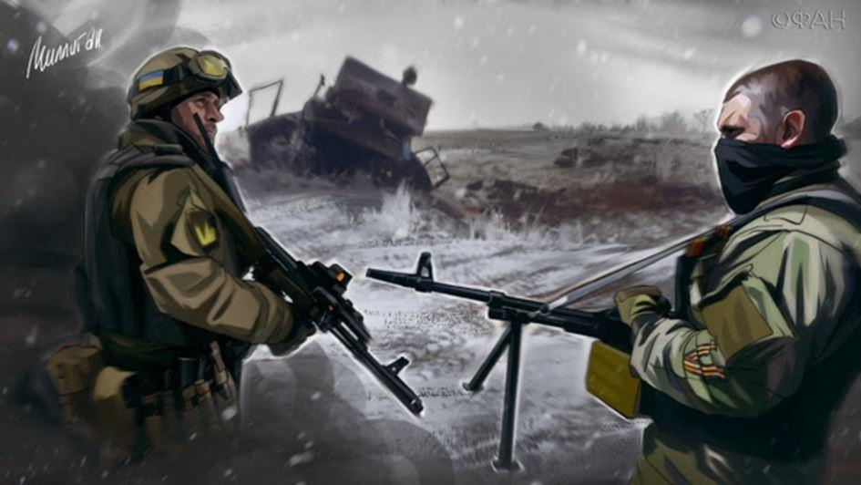

Depuis bientôt 6 ans des femmes et des hommes meurent dans une guerre du Donbass qui n'en finit pas de secouer une Europe provoquant une nouvelle fracture Est-Ouest près de 30 ans après une guerre froide. Et pour cette guerre très localisée dans son activité mais aux menaces et enjeux internationaux, on observe de part et d'autre du front une radicalisation d'idéologies nationales mais qu'il est cependant impossible de réduire à de simples nationalismes s'affrontant idéologiquement et militairement sur fond de crise ukrainienne.
Car d'un côté comme de l'autre, les objectifs concrets aussi bien que les visions sociétales pour lesquels les belligérants s'affrontent dépassent largement leur territoires revendiqués pour atteindre le niveau d'un affrontement métapolitique opposant un monde unipolaire occidental organisé autour de la fluidité d'échanges capitalistes à un monde multipolaire russe bâti sur la solidité de son histoire et ses traditions identitaires héritées. Et l'une comme l'autre de ces visions ontologiques opposées s'appuient sur le sentiment d'appartenance de l'Homme à un espace géographique pour mobiliser à leurs profits des forces humaines vives, tant politiques, sociales que militaires.
Loin de moi l'ambition de faire ici une critique du nationalisme en général, je n'en ai pas les compétences et surtout parce que cette analyse est très complexe du fait que chaque nationalisme exprimé est unique dans ses racines historiques et idéologiques autant que ses mythifications et instrumentalisations politiques.
Cependant force est de constater que la crise ukrainienne dans son ensemble et la guerre qu'elle a provoqué dans le Donbass sont un champ d'observations intéressantes sur ce sujet des nationalismes, et je me propose ici d'en partager quelques-unes.
Nostalgiques réactionnaires contre révolutionnaires conservateurs
De l'aveu même des occidentaux, le coup d'État du Maïdan s'est appuyé pour renverser le gouvernement Ianoukovitch début 2014, autant sur les soutiens politico-médiatiques et financiers des occidentaux que sur la violence des groupes paramilitaires nationalistes ukrainiens, renforcés par des agents des services étasuniens et des mercenaires étrangers.
Et pendant cet hiver 2013-2014 s'est réalisée l'alliance idéologiquement improbable de nationalistes néo-nazis avec la ploutocratie des démocraties occidentales et ses oligarques juifs ukrainiens. Mais fomenter ce type d'« alliances contre nature » n'est pas une nouveauté pour l'impérialisme anglo-étasunien, et il suffit d'observer toutes ses connexions complices avec le salafisme idéologique et terroriste (de la création de l'Arabie Saoudite à l'encadrement récent des djihadistes en Syrie en passant par les talibans d'Afghanistan dans les années 80 etc.) pour s'en convaincre.
Le fait est que nous observons en Ukraine des nationalistes ethnocentrés parmi les plus radicaux du moment se mettre au service d'un mondialisme dont la stratégie vise à réduire au néant toute forme de particularisme identitaire qui par définition s'oppose au nivellement humain de la dictature de la marchandise. Et tout comme les talibans afghans des années 80 c'est une russophobie psychotique partagée et étendue aux alliés de Moscou qui motive souvent ses alliances criminelles dont les divorces inéluctables conduisent à des bains de sang internes...
Du côté de l'Europe occidentale, la guerre dans le Donbass a provoqué une fracture au sein de la mouvance nationaliste qui comme en France se sépara en 3 blocs principaux :
- Les « réactionnaires nostalgiques » pro ukrainiens, pétris par les lieux communs russophobes d'une propagande occidentale, soit nazie soit atlantiste, et qui voient dans le Maïdan la résurgence potentielle d'un État nation de type fasciste et militarisé contre une Russie diabolisé. C'est ainsi qu'une partie des nationalistes occidentaux soutient les partis néo nazis ukrainiens Svoboda, et Secteur Droit et leur nébuleuse paramilitaire jusqu'à fournir des volontaires aux bataillons spéciaux engagés contre le Donbass. Ces « idiots utiles » sont comme des insectes attirés par les marches aux flambeaux des bandéristes ukrops et qui ne voient pas que ce sont leurs ennemis idéologiques, ceux que Rousseau appelait les « cosmopolites » bourgeois qui les ont allumés…
- Les « conservateurs révolutionnaires » pro russes, qui considèrent la Russie comme le dernier grand bastion défendant les valeurs civilisationnelles qu'ils défendent contre le tsunami mondialiste. Malheureusement ces nationalistes occidentaux pro-russes fantasment souvent sur le modèle russe et son pouvoir cherchant à y projeter leur vision d'un État centralisateur communautaro-centré qu'incarnerait le pouvoir fort de Poutine. Ces « utopistes échoués » ne comprennent pas la complexité de l'empire russe qui survit depuis plus de 1000 ans à ses métamorphoses impériale, soviétique et fédérale et qui est à l'opposé d'un jacobinisme simpliste, malgré des valeurs communes indéniables.
- Les « nationalistes opportunistes et lâches », qui regardent ailleurs quand cela chauffe mais tout en tendant leurs gamelles électoralistes pour continuer à « bouffer à tous les râteliers » sans jamais prendre de risque sur le chemin du pouvoir politicien. Tantôt nationalistes européens contre l'Union Européenne, tantôt autruches nationalistes regardant ailleurs quand arrive le danger. Ainsi par exemple de ces personnalités du RN ou du parti républicain qui profèrent de beaux discours pro-russes, histoire de gratter quelques billets pour leurs campagnes politiques françaises ou leurs business moscovites ; mais refusent de venir dans le Donbass soutenir une résistance pro-russe concrète à l'impérialisme atlantiste.
Or je pense que pour soutenir sincèrement la Russie en général et la rébellion du Donbass en particulier il faut abandonner les dogmes idéologiques en cours et qui infectent les cervelles nationalistes occidentales depuis 2000 ans, comme de nombreuses autres idéologies étatiques. Le mal est cette vision d'un pouvoir centralisé et communautaro-centré soit autour d'une ethnie, soit autour d'une religion et qu'incarne une personnification du pouvoir politique qui séduit à la fois les tyrans et les faibles. Certes Poutine est l'homme fort de la Russie, certes l'orthodoxie est la religion majeure de la Fédération de Russie, mais la vision ontologique de cet immense pays où jamais ne se couche le soleil (11 fuseaux horaires) n'est pas fondée que sur ces 2 piliers mais surtout sur une notion d'empire de type civilisationnel à l'intérieur duquel chacun des peuples le constituant continue d'exercer ses coutumes, cultes et cultures identitaires (ce qui est totalement opposé à la pensée unique occidentale, qu'elle soit religieuse, économique ou politique).
Nationalisme descendant contre patriotisme ascendant
Mais là où la fracture entre nationalistes est certainement la plus profonde c'est dans ses dynamiques d'expression et même de construction qui s'opposent radicalement malgré des valeurs antimondialistes partagées. En effet nous observons 2 principales dynamiques identitaires et qui se déclinent en systèmes politiques opposés :
- Une dynamique descendante qui émane d'un pouvoir politique centralisé qui définit arbitrairement l'identité unie des personnes vivant sur les territoires qu'il a conquis au cours de l'Histoire. Cette identité est souvent forcée par une propagande et une éducation contrôlées dont l'objectif principal est de créer et distiller dans les esprits un mythe national pour uniformiser les citoyens et les conditionner à l'existence d'une nation unique et pour beaucoup d'entre eux, souvent hors sol. L'histoire des expansionnismes divers (religieux, économiques, politiques, culturels etc.), européens ou coloniaux des États-nations occidentaux nous donnent des exemples continuels de ces pensées uniques hégémoniques généralement communautaro-centrées.
- Une dynamique ascendante qui émane du peuple et construit le « Politis » d'une nation dans le cadre de son identité humaine réelle qui est la résultante d'un territoire naturel qui forge une culture elle-même matrice d'une identité nationale (au sens étymologique de « natio » c'est à dire « groupe humain de la même origine »). Après cette filiation peuple-nation, la formation d'un État en est la conséquence historique éventuelle et non la cause ontologique et légitime comme cherchent à nous le faire croire les centralismes politiques qui aiment d'ailleurs entretenir une confusion entre Peuple, Nation et État (« L'État, c'est moi » de Louis XIV ou « la raison d'État » de Machiavel, sont parmi les piliers qui fondent l'absolutisme politicien des futurs États nations occidentaux).
Et cette opposition de ces dynamiques ascendantes ou descendantes des définitions identitaires n'est pas nouvelle. Elle trouve déjà une illustration au XVème siècle dans la querelle opposant Jean Bodin, le théoricien d'un pouvoir centralisateur et placé au-dessus des lois, à Althusius Johannes, l'héritier de cette relation du citoyen à l'empire antique à l'intérieur de laquelle les identités et les traditions des peuples le composant sont respectés par le pouvoir (cet héritage impérial va survivre en partie sur les territoires de l'ancien empire romain germanique qui restent pour beaucoup encore des systèmes fédéraux).
Et si vous ne savez pas reconnaître lequel des sentiments exprimés est un nationalisme descendant, forcé et artificiel et lequel est un patriotisme montant, naturel et charnel, il suffit d'écouter les discours des uns et des autres : les propagandes nationalistes sont fondées l'infaillibilité du pouvoir autant que sur la haine (et la peur) des autres, donnant ainsi naissance à des communautarismes suprématistes, tandis que les propagandes patriotiques entretiennent la démocratie (« demos kratos ») l'amour des siens, de ses traditions lointaines et le respect des autres.
Communautés de l'Être contre sociétés de l'Avoir
Et la guerre du Donbass est à ce titre l’expression la plus radicale et violente de cette opposition entre un nationalisme descendant du concept idéologique d'un pouvoir suprématiste et un nationalisme ascendant émanant d'un « sens commun » d'un peuple naturel face à des événements dramatiques menaçants et réveillant, par-delà toute idéologie politique, son « inconscient collectif ».
- D'un côté nous avons un globalisme atlantiste qui cache ses ambitions hégémoniques derrière le nationalisme bandériste ukrainien qu'il excite et qui est consubstantiellement englué dans un antibolchévisme nazi et désuet mais servant efficacement la russophobie qui lui a succédé d'un Occident conditionné par 40 années de guerre froide et une propagande de guerre d'une stratégie étasunienne qui lui a survécu.
- De l'autre côté nous avons le patriotisme du peuple russe du Donbass, mais dont le territoire a été arbitrairement déplacé en Ukraine par Lénine il y a un siècle et coupé de sa « mère patrie » depuis la chute de l'empire soviétique, qui réagit unanimement lorsque son identité, ses libertés mais aussi ses vies sont menacées par le nouveau pouvoir de Kiev.
On pourrait certes s'arrêter ici et se contenter de l'observation géopolitique des enjeux et menaces du moment de cette crise ukrainienne et de son paroxysme qu'est la guerre du Donbass, mais je pense que ce serait une erreur que de ne pas mettre ses événements historiques dans la perspective métapolitique plus large et lointaine du champ historique des idées qui dans une spirale d'actions et réactions provoquées façonnent et parfois détruisent le monde.
Car au-delà de la résistance acharnée d'un Donbass naturellement russe face à un occidentalisme ukrainien forcé, nous assistons dans cette région bordant la Mer d'Azov aux confins de l'Europe et l'Eurasie à un affrontement entre deux visions ontologiques radicalement opposées : d'un côté celle d'un monde unipolaire gouverné par une ploutocratie mondialiste apatride et de l'autre côté celle d'un monde multipolaire ancré dans les traditions et les identités de ses peuples natifs.
Et de cette confrontation mortelle est en train de naître un nouveau paradigme dont les Républiques Populaires de Donetsk et Lugansk ne sont certainement que les prémices européennes : celle de la reconquête par les peuples de leurs libertés depuis trop longtemps bafouées par les princes et les clercs d'hier ou les marchands d'aujourd'hui.
Ce à quoi nous assistons dans le Donbass sous sa forme la plus radicale, c'est une rébellion supra communautariste et apolitique d'un peuple contre la dictature de la marchandise que servent en Ukraine les canons de Kiev. Le Donbass, c'est le réveil de l'Europe, dans une subsidiarité ascendante dynamique, pour le grand combat des communautés de l'Être contre les sociétés de l'Avoir qui veulent détruire sa civilisation et mettre en esclavage ses populations natives.

Partager cette page